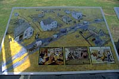
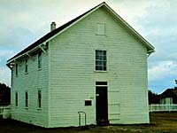
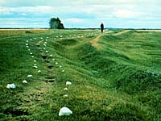

Community of Batoche
Village of Batoche
Northwest Rebellion
Battle of Batoche
Gabriel Dumont

| The Village of Batoche | |||
 A small, prosperous village once stood here. It contained a variety of stores, a hotel and stopping place, and a blacksmith's shop. Located at the junction of the Carlton and Humboldt trails, it extended across the river where other stores and structures had been built. It was called Batoche, the nickname of its founder, Francois-Xavier Letendre dit "Batoche," and for almost half a century, the village was the commercial centre for the Metis Settlement which stretched some 40 kilometres (25 miles) along the river from St. Laurent to Fish Creek. In 1872, Xavier Letendre dit "Batoche", built a store and warehouse and began a ferry service where the Carlton Trail crossed the South Saskatchewan River. It proved to be a highly successful commercial venture and the village quickly grew around the crossing. | |||
| GPS: 52d 45.51m N, 106d 07.80m W, 1444 feet 10 July 96, 2:50 pm, Fuji Velvia 50, F8 1/30s | |||
| The village you would have seen in 1890 was experiencing a brief period of growth. Strategically located at the junction of the east/west and north/south overland trade routes, it was provisioned via the Carlton Trail. Two Hudson's Bay Company steamers, the Northcote and the Lily, plied the Saskatchewan River visiting communities along the route. Service was slow, however, and overland freighting proved cheaper, more dependable and in good times, assured the Metis of contacts from the H.B.C. and independent traders. | |||
 Batoche was a bustling village in 1885. The people of the St. Laurent Settlement were developing their small farms and ranches to supplement their freighting and trading activities. The North West Rebellion severely disrupted this little community. Its' leaders were jailed, families were scattered and farms and businesses destroyed. Some persevered and a brief period of prosperity followed in the early 1890s. By the turn of the century, however, other factors were beginning to take their toll on the settlement. | |||
| Economic depression, decline in freighting, railway bypass, emotional disillusionment and intensive government prevented many Metis from successfully adapting to the rapidly changing face of western Canada. | |||
 By the 1920s, as commerce moved to Duck Lake, the village on the Carlton Trail had virtually disappeared and only cellar depressions and remnants of stone foundations remained as a reminder of this once prosperous little town. |